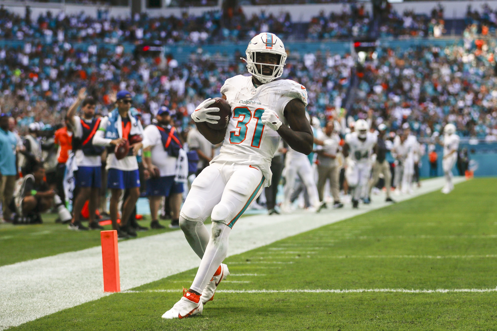
Another week, another three touchdowns from this scary fish (dolphins are mammals, I know.)Matchup of the Week
*️⃣ Exotic Engrams (3-3) v. JA MONTG (2-4) *️⃣ There are some interesting matchups this week, but right in the middle, Tony and I will battle to the death. Tony is 3rd in points, so a win gets him into the top four, while I try to hang on to the fourth spot.
What to Watch: RB Health: Aaron Jones and CMC are both very questionable, and right now we have both starting. But… This one is all about the Lions backfield.
Tony has Montgomery (OUT) and Craig Reynolds (QUES), while I will be starting Gibbs (QUES), coming back from a hamstring - which seems to be the theme of the NFL season so far. Saw Campbell had some comments on letting Gibbs eat… but can we believe that?
Waiver Wire Wizard
🧙🏻♂️ Andy - $1 - Dalton Schultz Each of his last three starts have been TE6 or better, and these Texans are gonna keep throwing.
Honorable Mentions PJ - $1 - Kylo Murray PJ is in first without having great QB play. Maybe this stash will pay off down the stretch.
Tony - $3 - Craig Reynolds If he plays, he’ll surely score a TD. At the time of the pickup he was healthy too.
Cries for Help
😭 Joel - $26 - Kareem Hunt Does anyone know what to expect from this backfield? Or, the Browns at all? Joel seems to know, outbidding the field by $23!
Honorable Mention PJ - $14 - Zach Evans He already dropped him. But Foreman could be a better stream this week after the Rams brough up Henderson and Freeman.
Week Seven Power Rankings
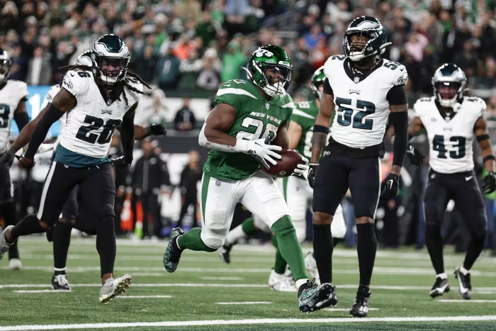
👑 8=====D (5-1, W3, PF 717.18) ⬆️
Waiver Budget: $47 PJ keeps winning and sits alone at 5-1. Records matter, and we’re at the half-way point of the fantasy regular season this week. Aiyuk sees an upgrade with Deebo going out. Perfect timing with JJ to the IR. Zay Flowers seems to be blooming too. Maybe slotting PJ here will get him a loss, though the 1st place curse seems to have gone away.
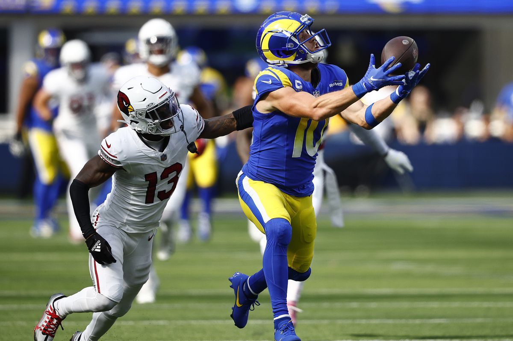
2. Tua Williams One Kupp (4-2, W3, PF 853.12) ⬆️
Waiver Budget: $17 Last week’s top scorer again, by a slim margin, and the high scorer on the year by a larger margin. Three straight wins. Kupp, Chase and Etienne look unstoppable, while Moore starts his descent. We must take this man down this year.
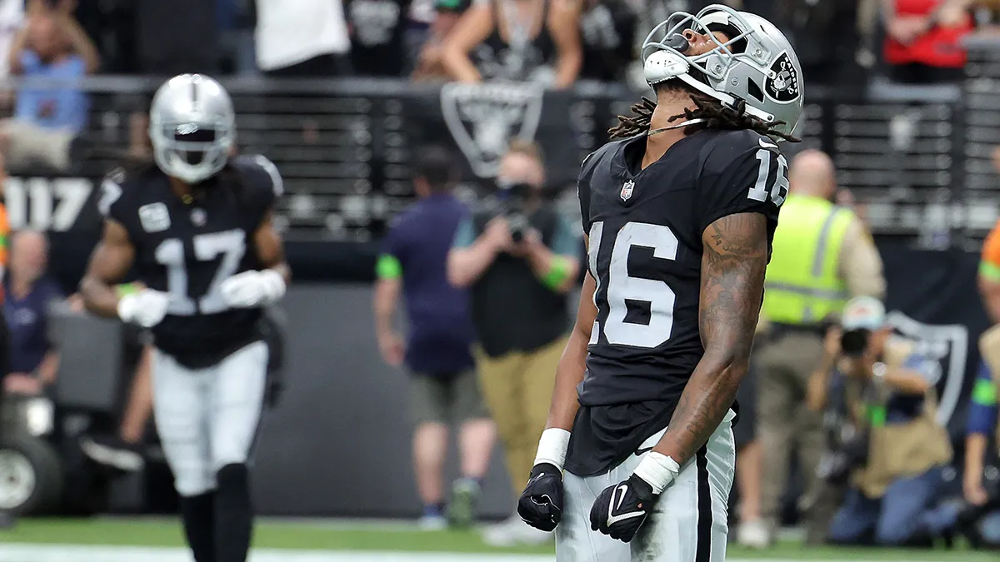
3. Diggin That Bijan Mustard (4-2, W3 , PF 788.24) ⬇️⬇️
Waiver Budget: $58 Another win, but the performance was just slight enough to let CJ get hopped - luckily he faced Joel’s not-so-stong 88.00. Chris has his own version of what Matt has with Diggs, Allen and Kamara (I have egg on my face for that trade!) Jacobi Meyers has been excellent too - WR17 even with the missed week. Could get a big boost if Bijan gets back to his season-beginning form.
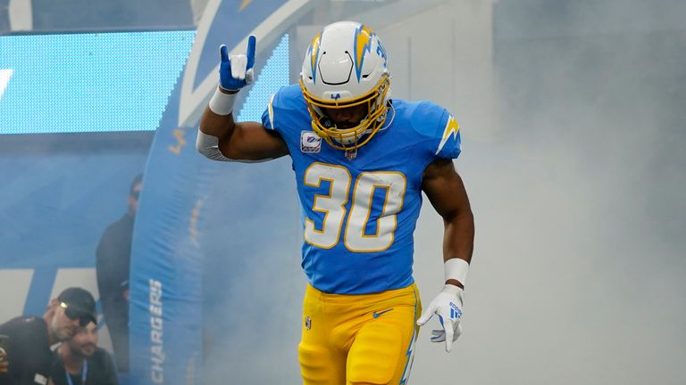
4. Exotic Engrams (3-3, 1W, PF 722.96) ⬆️⬆️⬆️⬆️
Waiver Budget: $44 I think I got through my tough stretch and last week was a nice bounce back, with the soft matchup against the Unpaid Bills. Ekeler didn’t pop in his return but his usage was back, and the Chargers have a nice schedule against some poor running defenses coming up. Jeudy trade is killing me as he sits on the bench, perhaps he’ll be in a better situation soon.
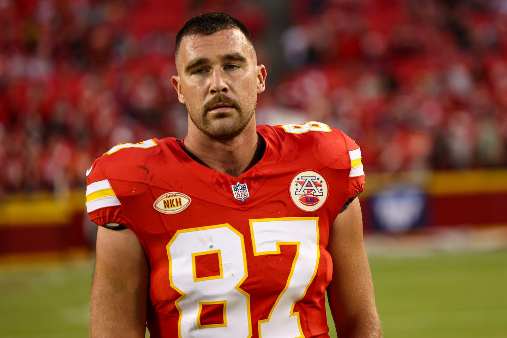
5. JA MONTG (2-4, 1L, PF 775.84) ⬇️
Waiver Budget: $50 CMC injuries, death and taxes - you know what it is when you draft him. Pretty incredible that he is on pace to start, apparently. Tough to lose Montgomery in the same week. If those backs play the full game, Tony probably takes Seif down in their close game. Kelce is back. Pittman looks like this guy that was being drafted so highly last year.
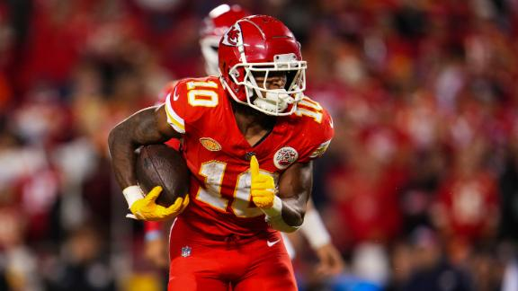
6. Sweet Brotha Numpsay (3-3, 1L, PF 679.30) ⬇️
Waiver Budget: $31 Pangy only moves down a spot, because I have the most respect for this team. AJ Brown is a fucking man. But can he carry this team through Kyren Williams going to IR, he was such a bright spot for YP, though Pacheco is getting fed. Oh, and ouchie for Reebo, Pangy hexed him with the trade.
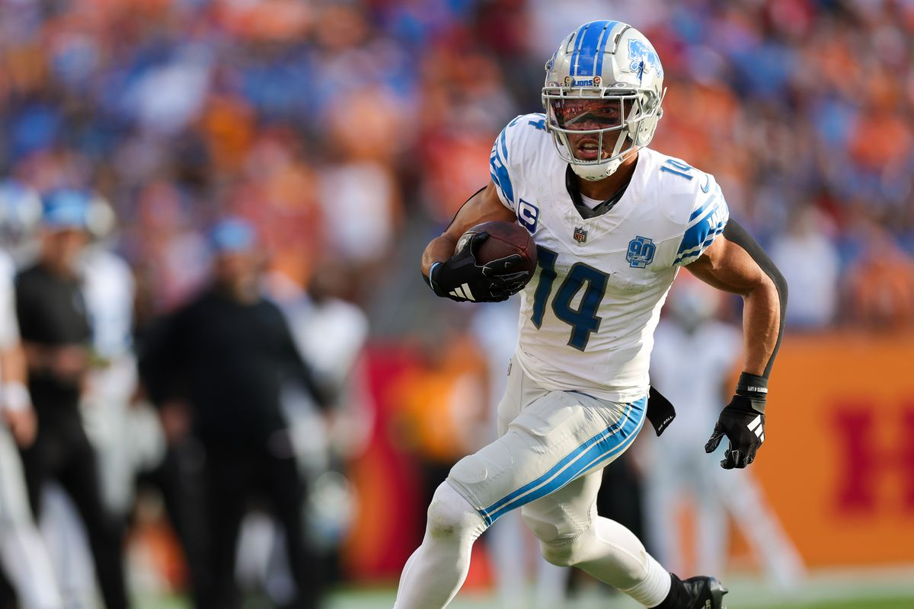
7. Jus-Kareemn-4-Herb (3-3, 1W, PF 697.28) ⬆️⬆️
Waiver Budget: $8 Even with the win, it’s hard to look at the $8 FAAB and rank this team high. Is Zach Moss the best RB in the NFL!? Definitely the best back on the Colts. Curtis Samuel seems like a great, cheap pickup, as the OC is scheming him up weekly. Mike Evans has returned to earth.
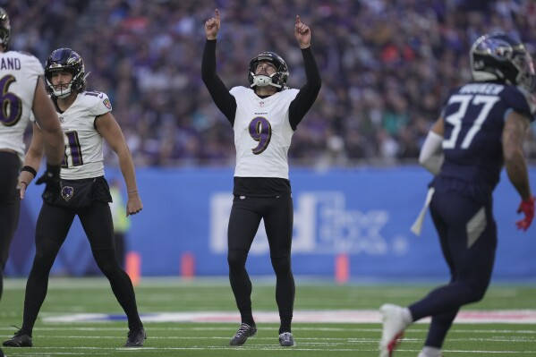
8. Love Heem (3-3, 1L, 687.58) ⬇️
Waiver Budget: $37 Will the real Gabe Davis please stand up? What a conundrum. It’s sad to see Mostert being wasted on this team, and shocking that he isn’t carrying Kris to victories - last week Tucker’s 19 points was easily the second highest scorer behind Mostert. The rest of this team needs to step up. Kris turns to McLaughin at RB2 this week, eek!
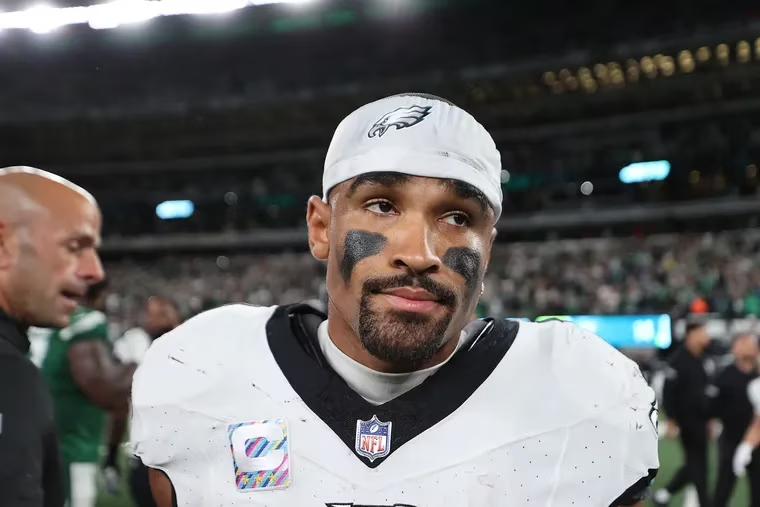
9. Hurts Donut (2-4, 2L, PF 724.98) ⬇️⬇️
Waiver Budget: $33 Two dropped in a row, but in a good spot with PF and FAAB, so let’s not count Joel out yet. Nico Collins is a star, I love him. Joel will need Puka to step back up, but he has some tough matchups and a bye on the horizon. Is Josh Jacob washed? He’s faced “green” matchups most of the season so far.
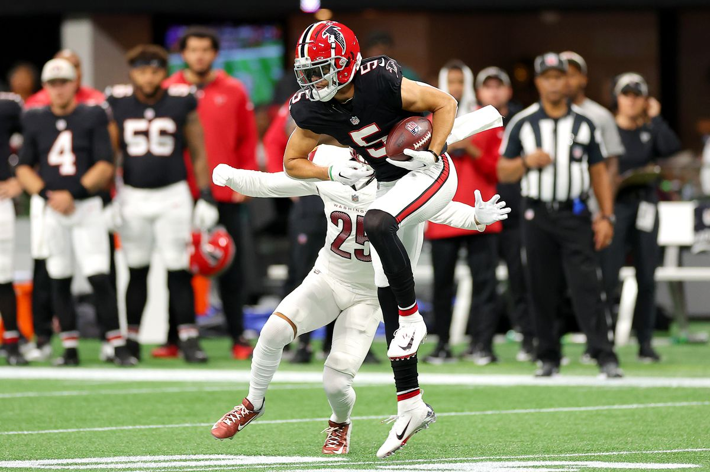
💩 Unpaid Bills (1-5, 4L, 629.02) 🔂
Waiver Budget: $56 Lamar is great, Saquon, too. But the rest of this team is baaaad. Glad we’ll be IRL with Neil next year to see his outfit.
Good luck to everyone besides Tony! 🐦
“Boy Idgad about your parlay or fantasies, I’m trying to win.”
- Lamar Jackson, joining Antonio Brown as a Fantasy Fucks hater
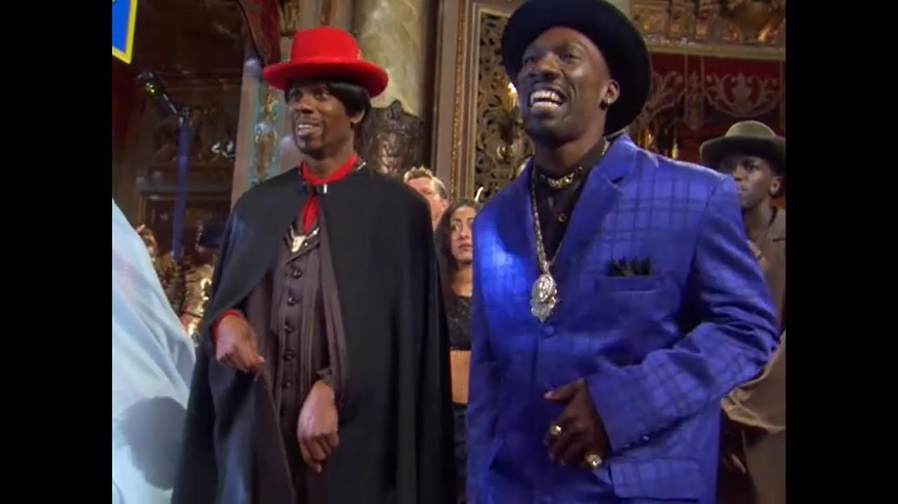